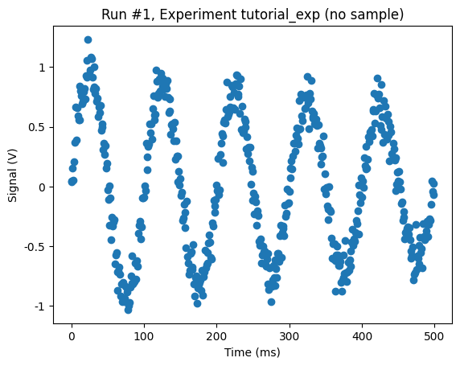
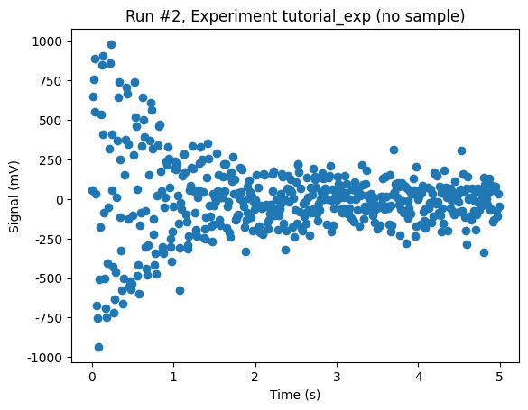
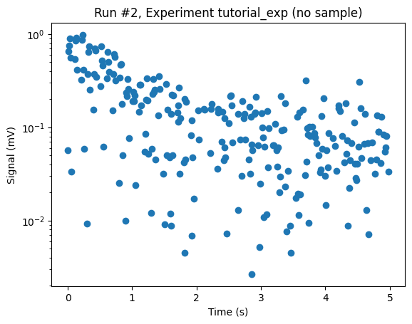
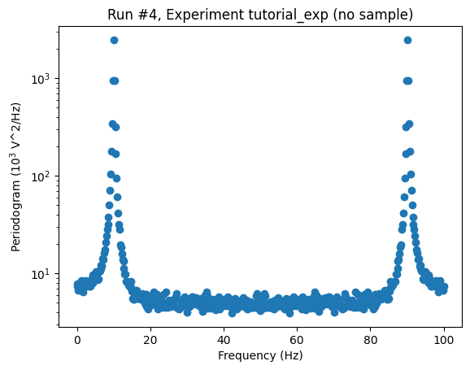
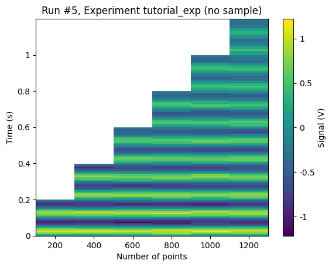

This page was generated from
docs/examples/writing_drivers/A-ParameterWithSetpoints-Example-with-Dual-Setpoints.ipynb.
Interactive online version:
 .
.
A ParameterWithSetpoints Example with Dual Setpoints
This notebook explains how you can account for dual setpoints using ParameterWithSetpoints. The basics of writing drivers using ParameterWithSetpoints is covered in the notebook named Simple Example of ParameterWithSetpoints.
In this example we consider a dummy instrument that can return a time trace or the discreet Fourier transform (magnitude square) of that trace. The setpoints are accounted for in an easy way.
[1]:
from typing import TYPE_CHECKING
if TYPE_CHECKING:
from typing_extensions import Unpack
import os
import numpy as np
import qcodes.validators as vals
from qcodes.dataset import (
Measurement,
initialise_or_create_database_at,
load_or_create_experiment,
plot_dataset,
)
from qcodes.instrument import Instrument, InstrumentBaseKWArgs
from qcodes.parameters import Parameter, ParameterWithSetpoints
Logging hadn't been started.
Activating auto-logging. Current session state plus future input saved.
Filename : /home/runner/.qcodes/logs/command_history.log
Mode : append
Output logging : True
Raw input log : False
Timestamping : True
State : active
Qcodes Logfile : /home/runner/.qcodes/logs/240704-6698-qcodes.log
[2]:
def timetrace(npts: int, dt: float) -> np.ndarray:
"""
A very realistic-looking signal
"""
#freq = 10/(dt*npts)
#decay = 1/(dt*npts)
freq = 10
decay = 1
time = np.linspace(0, npts*dt, npts, endpoint=False)
signal = np.exp(-decay*time)*np.sin(2*np.pi*freq*time)
noise = 0.1*np.random.randn(npts)
return signal + noise
[3]:
class TimeTrace(ParameterWithSetpoints):
def get_raw(self):
npts = self.root_instrument.npts()
dt = self.root_instrument.dt()
return timetrace(npts, dt)
class Periodogram(ParameterWithSetpoints):
def get_raw(self):
tt = self.root_instrument.trace()
return np.abs(np.fft.fft(tt)) ** 2
class TimeAxis(Parameter):
def get_raw(self):
npts = self.root_instrument.npts()
dt = self.root_instrument.dt()
return np.linspace(0, dt * npts, npts, endpoint=False)
class FrequencyAxis(Parameter):
def get_raw(self):
npts = self.root_instrument.npts()
dt = self.root_instrument.dt()
return np.linspace(0, 1 / dt, npts)
class OzzyLowScope(Instrument):
def __init__(self, name: str, **kwargs: "Unpack[InstrumentBaseKWArgs]"):
super().__init__(name, **kwargs)
self.npts = self.add_parameter(
name="npts",
initial_value=500,
label="Number of points",
get_cmd=None,
set_cmd=None,
)
self.dt = self.add_parameter(
name="dt",
initial_value=1e-3,
label="Time resolution",
unit="s",
get_cmd=None,
set_cmd=None,
)
self.time_axis = self.add_parameter(
name="time_axis",
label="Time",
unit="s",
vals=vals.Arrays(shape=(self.npts,)),
parameter_class=TimeAxis,
)
self.freq_axis = self.add_parameter(
name="freq_axis",
label="Frequency",
unit="Hz",
vals=vals.Arrays(shape=(self.npts,)),
parameter_class=FrequencyAxis,
)
self.trace = self.add_parameter(
name="trace",
label="Signal",
unit="V",
vals=vals.Arrays(shape=(self.npts,)),
setpoints=(self.time_axis,),
parameter_class=TimeTrace,
)
self.periodogram = self.add_parameter(
name="periodogram",
label="Periodogram",
unit="V^2/Hz",
vals=vals.Arrays(shape=(self.npts,)),
setpoints=(self.freq_axis,),
parameter_class=Periodogram,
)
[4]:
osc = OzzyLowScope('osc')
[5]:
tutorial_db_path = os.path.join(os.getcwd(), 'tutorial_doND.db')
initialise_or_create_database_at(tutorial_db_path)
load_or_create_experiment(experiment_name='tutorial_exp', sample_name="no sample")
[5]:
tutorial_exp#no sample#1@/home/runner/work/Qcodes/Qcodes/docs/examples/writing_drivers/tutorial_doND.db
-------------------------------------------------------------------------------------------------------
Measurement 1: Time Trace
[6]:
timemeas = Measurement()
timemeas.register_parameter(osc.trace)
osc.dt(0.001)
with timemeas.run() as datasaver:
datasaver.add_result((osc.trace, osc.trace.get()))
dataset = datasaver.dataset
Starting experimental run with id: 1.
[7]:
_ = plot_dataset(dataset)

[8]:
osc.dt(0.01) # make the trace 10 times longer
with timemeas.run() as datasaver:
datasaver.add_result((osc.trace, osc.trace.get()))
dataset = datasaver.dataset
Starting experimental run with id: 2.
[9]:
_ = plot_dataset(dataset)

Measurement 2: Periodogram
[10]:
freqmeas = Measurement()
freqmeas.register_parameter(osc.periodogram)
osc.dt(0.01)
with freqmeas.run() as datasaver:
datasaver.add_result((osc.periodogram, osc.periodogram.get()))
dataid = datasaver.dataset
Starting experimental run with id: 3.
[11]:
axs, cbax = plot_dataset(dataset)
aa = axs[0]
aa.set_yscale('log')

Just for the fun of it, let’s make a measurement with the averaged periodogram.
[12]:
no_of_avgs = 100
with freqmeas.run() as datasaver:
temp_per = osc.periodogram()
for _ in range(no_of_avgs-1):
temp_per += osc.periodogram()
datasaver.add_result((osc.periodogram, temp_per/no_of_avgs),
(osc.freq_axis, osc.freq_axis.get()))
dataset = datasaver.dataset
Starting experimental run with id: 4.
[13]:
axs, cbax = plot_dataset(dataset)
aa = axs[0]
aa.set_yscale('log')

Measurement 3: 2D Sweeping
[14]:
meas = Measurement()
meas.register_parameter(osc.npts)
meas.register_parameter(osc.trace, setpoints=[osc.npts], paramtype='numeric')
with meas.run() as datasaver:
osc.dt(0.001)
for npts in [200, 400, 600, 800, 1000, 1200]:
osc.npts(npts)
datasaver.add_result((osc.trace, osc.trace.get()),
(osc.npts, osc.npts()))
dataset = datasaver.dataset
Starting experimental run with id: 5.
[15]:
_ = plot_dataset(dataset)

[ ]:
[ ]: